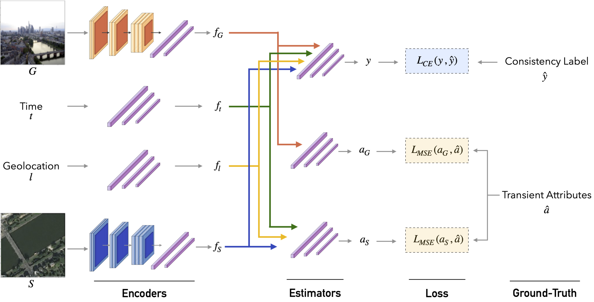

Most pictures shared online are accompanied by temporal metadata (i.e., the day and time they were taken), which makes it possible to associate an image content with real-world events. Maliciously manipulating this metadata can convey a distorted version of reality. In this work, we present the emerging problem of detecting timestamp manipulation. We propose an end-to-end approach to verify whether the purported time of capture of an outdoor image is consistent with its content and geographic location. We consider manipulations done in the hour and/or month of capture of a photograph. The central idea is the use of supervised consistency verification, in which we predict the probability that the image content, capture time, and geographical location are consistent. We also include a pair of auxiliary tasks, which can be used to explain the network decision. Our approach improves upon previous work on a large benchmark dataset, increasing the classification accuracy from 59.0% to 81.1%. We perform an ablation study that highlights the importance of various components of the method, showing what types of tampering are detectable using our approach. Finally, we demonstrate how the proposed method can be employed to estimate a possible time-of-capture in scenarios in which the timestamp is missing from the metadata.
Our goal is to assess if the visual content of an outdoor image is consistent with its hour and month of capture. For this, our method must extract discriminative features from the scene appearance and contrast them with the expected appearance for that specific time of capture. As variations in appearance over time are highly dependent on the location of the scene, it is essential to provide, as additional context, geographic cues of where the picture was taken.

With this in mind, we propose a CNN architecture to estimate the probability $P(y\,|\,G, t, l, S)$ that a given ground-level image $G$, associated with location $l$ and satellite image $S$, is consistent ($y=0$) or inconsistent ($y=1$) with an alleged timestamp $t$. By providing location $l$ as input, the network will be able to consider the influence of geographic position in seasonal patterns (e.g., winter months in the Northern hemisphere with reduced sunlight hours, and the opposite in the Southern hemisphere). Moreover, satellite image $S$ provides an additional context about the photographer's surroundings and the structure of the scene, such as whether the image was captured in an urban or rural area. We employ a basemap-style picture, which is globally available and can be easily obtained from online services (e.g., Google Maps and Bing Maps) given location $l$. This kind of imagery was designed for navigational purposes and offers an idea of the structure of the scene without reflecting time-dependent elements (e.g., illumination and weather conditions). In this sense, we do not assume $S$ is linked to the timestamp $t$, avoiding the need for a satellite image at the precise time-of-capture being checked.
For explainability, the network also estimates transient attributes $a_{\textit{G}}$ and $a_{\textit{S}}$. These are 40-dimensional arrays, with each value encoding the presence of a characteristic of the scene appearance (e.g., fog, hot, beautiful, summer) to the interval $[0,1]$. The attributes $a_{\textit{G}}$ are estimated solely from the ground-level image and capture the high-level properties of the scene at the moment it was recorded. In contrast, $a_{S}$ is estimated from the satellite photo, location coordinates, and the alleged timestamp, and can be interpreted as a prediction of the expected scene appearance at the alleged moment.
More details about each component of the architecture can be found in the main paper.
We present in the main paper and supplementary material several experiments highlighting different aspects of our method:
@article{padilha22content,
author = "Rafael Padilha and Tawfiq Salem and Scott Workman and Fernanda A. Andaló and Anderson Rocha and Nathan Jacobs",
title = "Content-Aware Detection of Temporal Metadata Manipulation",
journal = "{IEEE} Transactions on Information Forensics and Security (TIFS)",
volume = "In Press",
year = 2022
}